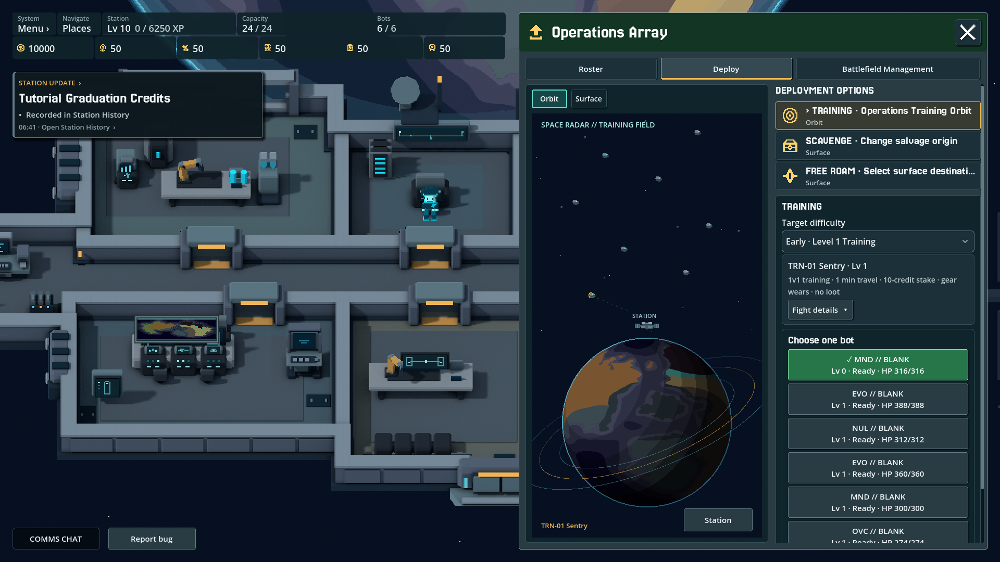
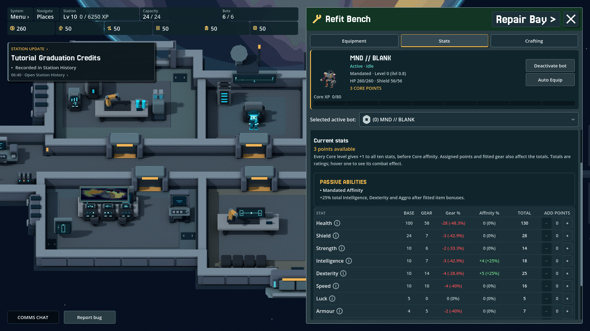
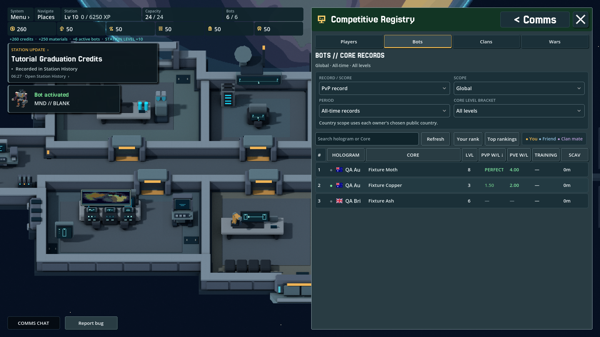

The challenge
Balance active and passive play, deep build-crafting and social systems without making the game’s choices unreadable.
TAIXU · Game UX & systems
TAIXU is an online bot-builder, idle MMO and automated battler. I’m designing and coding the game, from equipment stats and interfaces to the world’s lore.
Independent project · Iterating in alpha

Balance active and passive play, deep build-crafting and social systems without making the game’s choices unreadable.
Product direction, world and rules, interface design, technical prototyping, implementation and testing.
An evolving alpha, with ongoing polish and targeted technical checks as the systems grow.
01 / Design changes
A damaged part could stay equipped while its contribution quietly fell. Repair was easy to postpone because the cost of waiting was hard to read.
Wear should create a real choice: keep pushing a build, swap equipment, or spend resources to restore it before the next fight.

Base values, equipment, wear and affinity appear as a breakdown. The total still matters, but the player can see where it came from and what will change it.
Depth with explanation, not a hidden formula
Wear changed the result without making the repair decision feel immediate. The player had to infer too much from the final number.
The interface separates base, gear, wear and affinity. Repair becomes an understandable trade-off instead of a hidden tax.
02 / Progress & next steps
Selection stability passed native and headless regression checks across desktop, landscape and portrait viewports. That verifies the implementation, not its usability.
The next useful evidence is whether a new player can explain the loop, compare a worn build and recover when something goes wrong.
Project walkthrough · planned for 5–7 minutes

5–7 min · Captions and a transcript will accompany the recording.
Planned chapters
The player, the core loop and the design problem.
Making stats, choices and consequences legible.
What changed, how it was checked and what comes next.
Explore the other side of the practice


Retail systems · responsive UX
JB POS [AMPED]
A self-initiated desktop and PDA exploration made alongside my work at JB Hi-Fi.
Need a designer, have a role in mind, or want to talk through an idea? I’d love to hear from you.